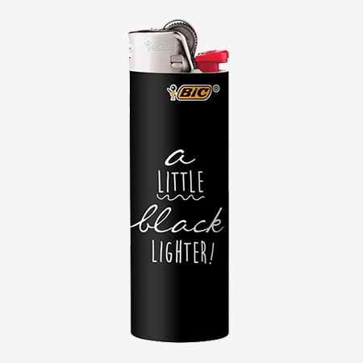

<ion-menu [content]="content" >
  <ion-header>
    <ion-toolbar>
      <ion-avatar item-start>
        
      </ion-avatar>
      <ion-title>User123</ion-title>
    </ion-toolbar>
  </ion-header>

  <ion-content>
    <ion-list>
      <button menuClose ion-item *ngFor="let p of pages" (click)="openPage(p)">
        {{p.title}}
      </button>
    </ion-list>
    <div id="bottomMenu">
        <button menuClose ion-item (click)="openPage('about')">About</button>
        <button menuClose ion-item (click)="logout()">Logout</button>
    </div>
  </ion-content>

</ion-menu>

<!-- Disable swipe-to-go-back because it's poor UX to combine STGB with side menus -->
<ion-nav [root]="rootPage" #content swipeBackEnabled="false"></ion-nav>
